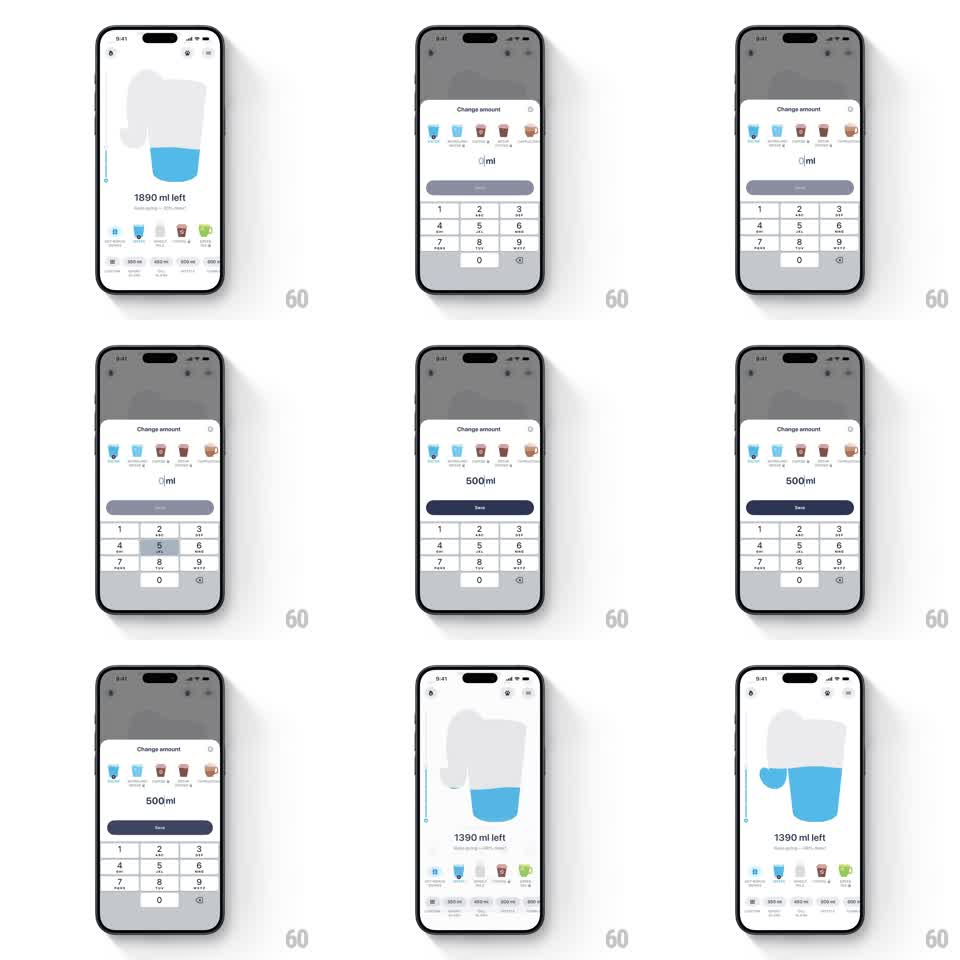

Media
Frame-by-frame

Rebuild this interaction 1:1: Liquid Cats' change-amount sheet - a bottom-sheet numeric keypad edits the ml value, and saving pours the typed amount into the cat-shaped liquid container with a sloshing rise.

Rebuild this interaction 1:1: Liquid Cats' change-amount sheet - a bottom-sheet numeric keypad edits the ml value, and saving pours the typed amount into the cat-shaped liquid container with a sloshing rise.
## Integration
Integration: stack-agnostic spec - springs given as stiffness/damping, timed motions as duration + curve; map every value to your framework and animation library of choice.
## Scene
Home screen with the cat container ("1890 ml left"). Tapping a drink opens a dimmed bottom sheet: "Change amount" header with close (x), a row of drink icons, a large centered "0 ml" readout, a Save button, and a numeric keypad (1-9, 0, backspace).
## Motion spec
Pattern: sheet + live keypad + liquid pour, per interaction.
- Sheet: slides up with a spring (~320/26, ~380ms) over a 40% black dim fade (200ms); dragging down dismisses with velocity tracking.
- Typing: each key tap updates the readout instantly with a tiny scale pulse (1 -> 1.06 -> 1, 120ms); the Save button enables (fills solid) once the value is nonzero (150ms fade).
- Save: the sheet slides down (300ms, ease-in), then the cat's liquid level rises to the new total (700ms, ease-out) with the decaying wave slosh (amplitude 6px -> 0 over 900ms) and the counter counts down ("1890 ml left" -> "1390 ml left", 600ms).
## Calibration
- The pour starts only after the sheet fully dismisses - no overlap of the two motions.
- Keypad keys highlight on touch (100ms) like a native keyboard.
## Reduced motion
Sheet and liquid change with 200ms cross-fades; no slosh or pulses.
## Don't miss
- The readout keeps the "ml" suffix inline at all times.
- The wave's first oscillation is the largest; it decays, not repeats evenly.